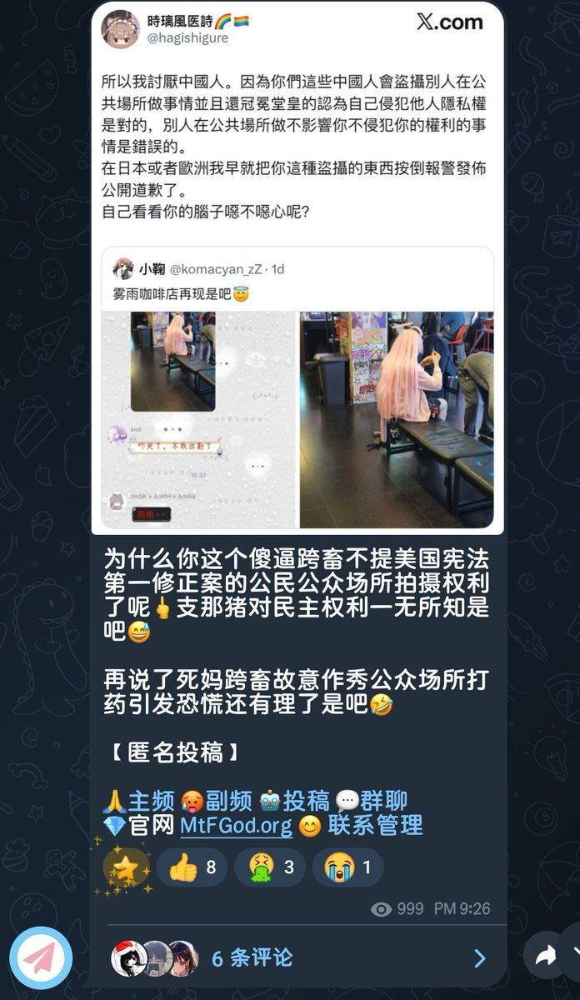

哦對了，那個依他佐辛是沒有看過我推嗎為什麼你會無話可說，你說話好神奇但是你可以來觀摩學習一下。🤔
唐不唐氏先不說。🤔
我一個作為研究批判理論，性別，多樣性理論，社會建構理論，神學，佛學，形而上學的為什麼會想做醫生誒。我是SfN組會這些頂級年會參與者不代表我想做神經醫學這一點很明顯吧。

唐不唐氏先不說。🤔
我一個作為研究批判理論，性別，多樣性理論，社會建構理論，神學，佛學，形而上學的為什麼會想做醫生誒。我是SfN組會這些頂級年會參與者不代表我想做神經醫學這一點很明顯吧。

嗯，看到我了，證明我在這件事上比amber強。滿意離去。就是怎麼沒一句話能駡到我的，能再改改，尖銳一點？第一，我和巴特勒的生理性別一致，第二，怎麼駡到跟我罵的一致立場的中國人不配民主上了🤔，這句再說了補上去好無力能換一句有力一點的嗎，匿名投稿的那位沒學過批判理論嗎為什麼遣詞如此軟弱🤔 https://t.co/nYg0l2UavA https://t.co/sp2tktyLV5